ご都合に合わせて
お選びいただける
花と緑に囲まれ
ぬくもりと安らぎに
包まれた長福寺墓地
-
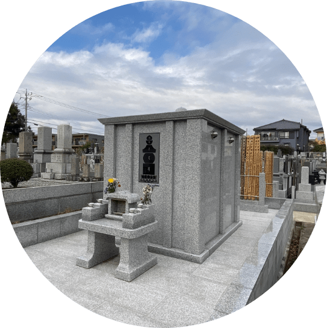 永代供養合祀墓
(宗旨・宗派不問）
(継承者不要）
-
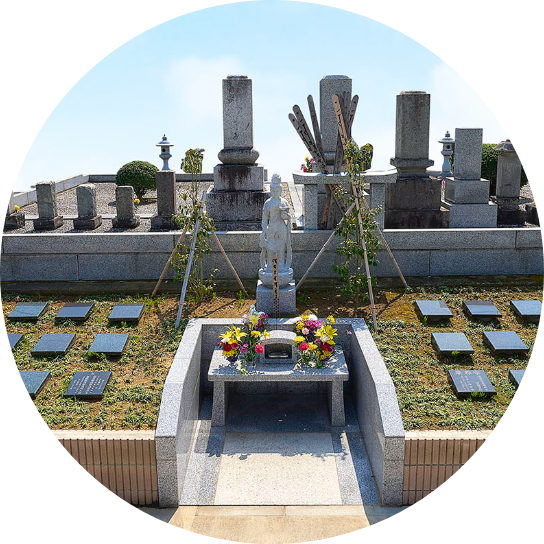 樹木葬
(宗旨・宗派不問）
(継承者不要）
-
一般墓地
(ご入檀限定)
-
永代供養合祀墓
宗旨・宗派不問
継承者不要
お墓の維持・継承が困難な方やご自身の永眠の地をお探しの方のために、
花に囲まれた山内にて、当山が永代にわたって故人を供養してまいります。供養料
-
合祀
一霊
10万円
-
骨壷安置
一霊
1万円
(1年につき**延長可能)
-
永代骨壺安置
一霊
50万円
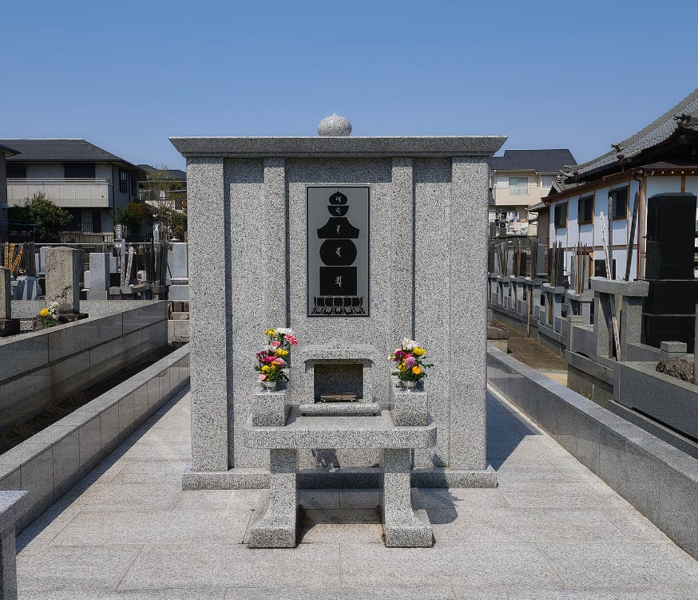 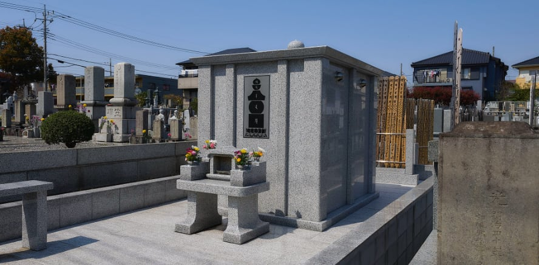 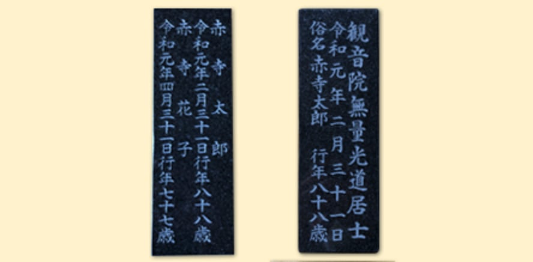 *毎年、年3回（お盆・春彼岸・秋彼岸時）合同供養を行います。
*生前の申し込みも承ります。
*ご希望の方に限り墓誌彫刻(別途費用)をお受いたします。
-
-
樹木葬
宗旨・宗派不問
継承者不要
観音様に見守られ、春には桜や花が咲き誇り、秋には敷地内の銀杏やけやきなどの樹木が色づき、
四季折々の景色が自然墓を彩ります。ご夫婦などの少人数でプライベートな空間をご希望の方向けのお墓です。供養料
-
永代供養
一区画
65万円
(原則2名まで)
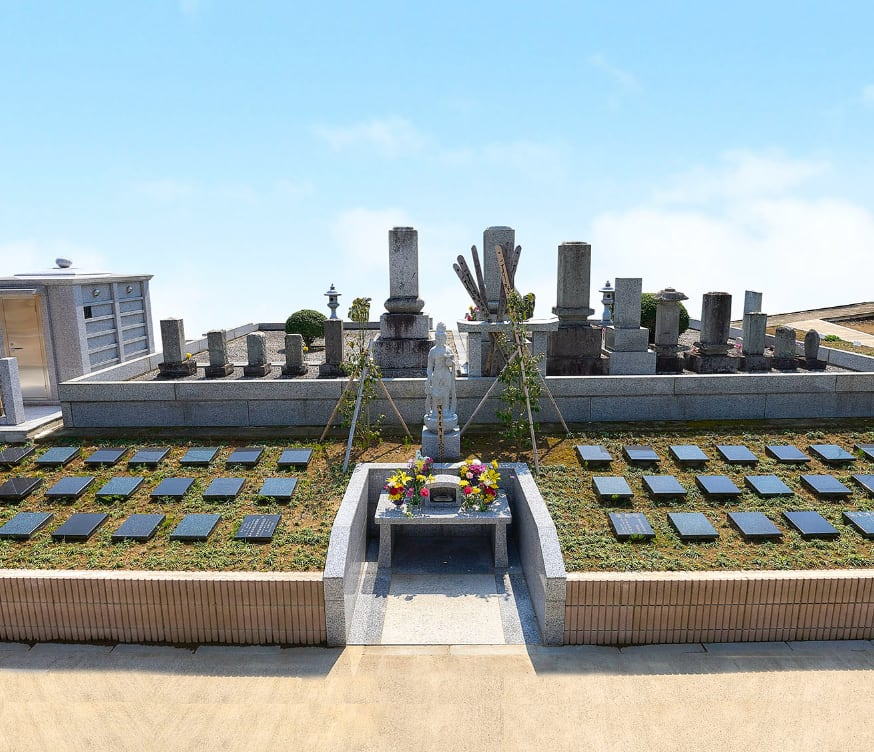 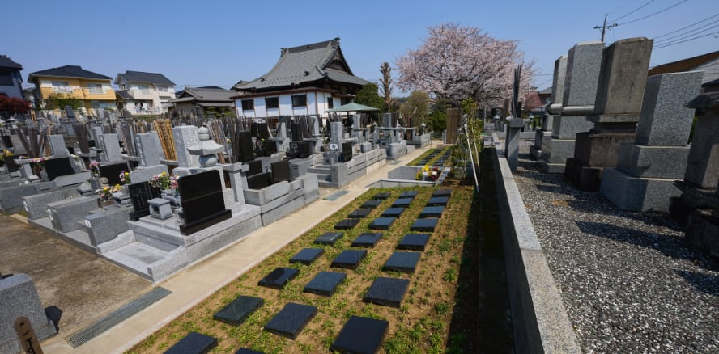 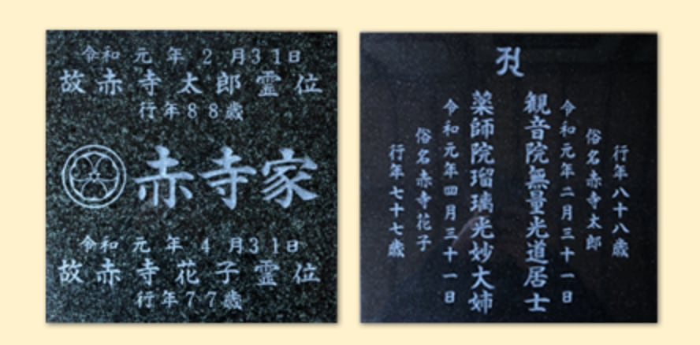 *毎年、年3回（お盆・春彼岸・秋彼岸時）合同供養を行います。
*生前の申し込みも承ります。
*ご希望の方に限り墓誌彫刻(別途費用)をお受けいたします。
-
-
一般墓地
ご入檀限定
陽光うららかな日差しがそそぐ墓地は、ご先祖のみならずお参りの方にも心地よい空間となっております。
バリアフリーでお参りできる区画から、高台南向きの区画まで様々な墓地がございます。
※当山へ御入檀のかたのみとさせて頂きます。供養料
-
広さ 1.2㎡
(間口1ｍ×奥行1.2ｍ）
50~55万円
-
広さ 1.5㎡
(間口1ｍ×奥行1.5ｍ）
60万円
-
広さ 3.78㎡
(間口1.8ｍ×奥行2.1ｍ）
120万円
-
広さ 5.04㎡
(間口2.1ｍ×奥行2.4ｍ）
170万円
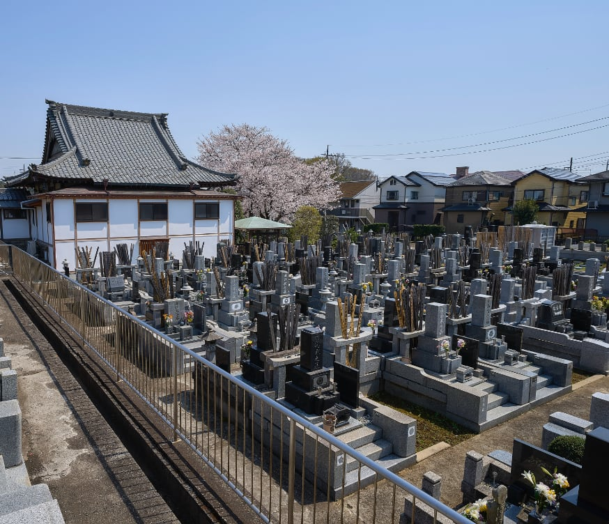 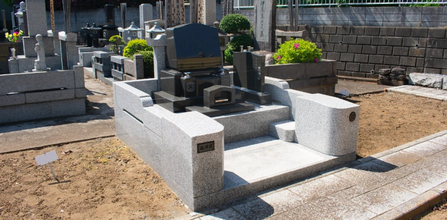 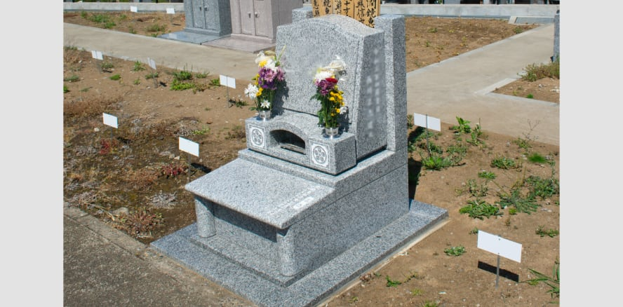 *墓地管理料は年間5千円となります。
*墓石代は上記に含まれておりません。
-
お電話でのお問い合わせ
047-485-4030
ご質問・ご見学予約はお気軽にご相談くださいませ。
受付時間10 : 00 〜 16 : 00
ネットでのお問い合わせ
お問い合わせはこちら